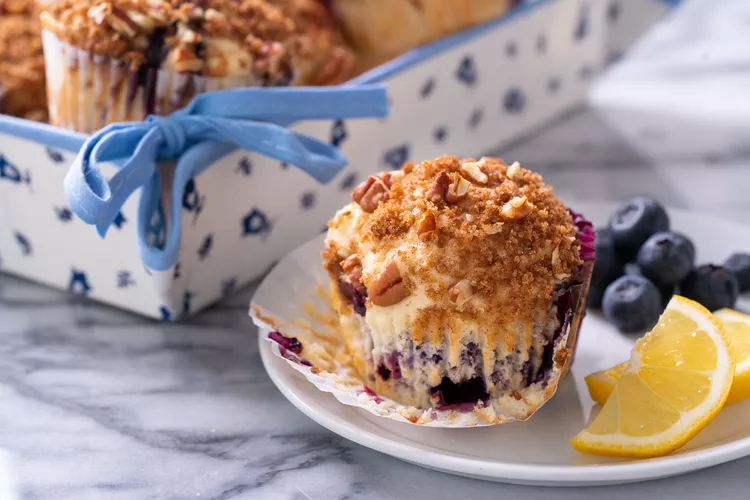

The Benefits Of Eating Blueberries
Blueberries consist of 14% carbohydrates, 0.7% protein, 0.3% fat and 84% water (table). They contain only negligible amounts of micronutrients, with moderate levels (relative to respective Daily Values) (DV) of the essential dietary mineral manganese, vitamin C, vitamin K and dietary fiber (table). Generally, nutrient contents of blueberries are a low percentage of the DV (table). A 100-gram serving provides a relatively low amount of food energy – 240 kilojoules (57 kcal) – with a glycemic load of 6

Blueberries In Israel
Growing blueberries in Israel is not considered natural. Blueberries grow in the wild in the northern part of the planet and in order to thrive, its species need cold rations (varies by species). But the truth is that blueberries need strong and direct sun, and do not only grow in very cold climates. Certain varieties known as "southern varieties" also thrive in Israel in the central region of the country and the Sharon region.
The Berries Family
Berries, the vibrant jewels of nature, come in a kaleidoscope of colors and flavors, offering a delightful sensory experience.berries are versatile and find their way into an array of culinary creations, from jams and desserts to refreshing salads. As a testament to their versatility and widespread appeal, berries stand as a symbol of nature's bounty and a flavorful addition to a wholesome, balanced diet.
Recipes With Blueberries
Blueberry Buckle

Bake this moist, crumb-topped blueberry buckle and be prepared to take a bow. It is that good.
Blueberry Bundt Cake
This is a delicious, made-from-scratch blueberry Bundt cake and it's much easier to prepare than you might think. Serve this great cake for breakfast or brunch, or serve it as a dessert with vanilla or lemon sauce.
Blueberry French Toast Bake
You can enjoy this cinnamon-scented blueberry French toast casserole for breakfast.It's similar to a bread pudding. Or serve it with a scoop of ice cream or a vanilla sauce for a delicious dessert. In other words, it's a daylong treat.
Blueberry Ice Cream
Your family will love this rich, creamy blueberry ice cream. Serve this ice cream at a summer gathering or special occasion. Use it to top slices of lemon pound cake or serve it with blueberry sauce.
Fresh Blueberry Lemonade
Use fresh or frozen thawed blueberries in this easy, refreshing blueberry lemonade drink. The drink takes 2 1/2 cups of blueberries and about 4 medium lemons (enough to make 1/2 cup of lemon juice).
Blueberry Jam

If you have an abundance of fresh blueberries, this jam is a great way to preserve them. Enjoy this jam on your biscuits or muffins or make it and give it away to special friends and family.
Lemon Blueberry Muffins
The bright flavor of lemon is the perfect partner for the sweetness of fresh or frozen blueberries in this blueberry muffins recipe. But it's the pecan-and-brown-sugar topping that really puts these standard muffins over the top.